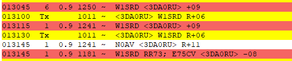

[Date Prev][Date Next][Thread Prev][Thread Next][Date Index][Thread Index]
[NCDXC Chat] 3DA0RU FT8 F/H Confusion
The 3DA0RU DXpedition, Kingdom of Eswatini, was doing a confusing
(to me) thing today on FT8.
First, it looked like they were using Fox/Hound mode of WSJT-x, but
they were transmitting on the odd cycle (15 and 45). F/H mode
specifies the Fox must be even/1st (00 and 30 cycles).
Second I noticed that stations they worked were not being moved into
the < 1000 Hz window to transmit when called.
After unsuccessfully trying to force WSJT-x in F/H mode to transmit
Hound messages on the even/1st cycle I contacted fellow DXpeditioner
N7QT. Rob told me they are using the MSHV program in multi-stream
mode without F/H. MSHV takes advantage of the F/H messaging but does
*not* require WSJT-X to be put into F/H mode.
Supposedly MSHV will work transparently with either Hound callers or
normal "simplex" mode callers at the same time, but I suspect the
expedition leaders decided to use odd cycle to force people to not
use WSJT-x F/H. That way they could multi-stream without forcing a
mode change on the callers part. The net effect is initial
confusion, but this may be a sensible way going forward. This would
avoid some of the annoying bugs in WSJT-X that Fox mode on the
expedition side that have never been fixed. It also reminded me that
WSJT-x is not FT8, but an implementation of the FT8 protocol.
I hope this saves you some confusion when trying to work 3DA0RU.
My 30m QSO:

As you can see their response looks like F/H. It's not.
If you are interested in MSHV: http://lz2hv.org/mshv
73 es gud DX.
Steve
W1SRD